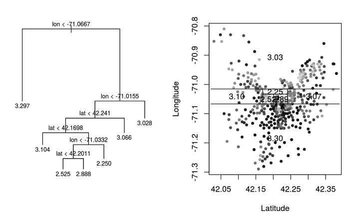
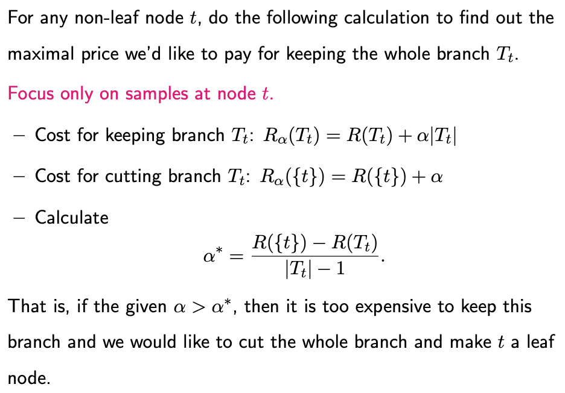
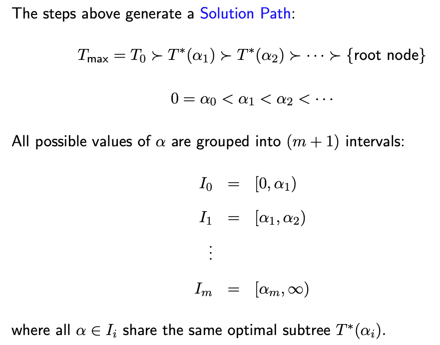

4.1. Regression Trees
4.1.1. Introduction to Regression Trees
This week, we’ll delve into tree-based models for regression. We’ll start by discussing how to construct a single regression tree before progressing to ensemble methods like Random Forests, which rely on bagging, and Gradient Boosting Machines (GBM), based on boosting techniques. Tree models serve a critical role in supervised learning, and we’ll revisit them in future discussions on classification.
To set the stage for regression, consider an input feature vector X with p predictors (excluding the intercept). Additionally, we have a response variable Y that takes on numerical values.
Trees models are constructed by recursively splitting regions of X into two sub-regions, beginning with the entire feature space X. For simplicity, we’ll focus on recursive binary partitions.
To illustrate the concept of a regression tree, let’s examine a fitted regression tree based on the Boston Housing Data. We’ll focus specifically on two features: longitude and latitude.
{kind=link}
On the right-hand plot, each dot represents a house, positioned according to its longitude and latitude. The greyscale indicates the price, with darker dots representing more expensive houses.
On the left-hand plot, you see the regression tree displayed in an upside-down manner. The tree starts at the root and recursively splits the feature space into narrower regions, accounting for both longitude and latitude, thus allowing for highly localized predictions.
Once the tree is built, each leaf node, corresponding to a rectangular region in the feature space, is assigned a constant prediction. For example, one leaf node may predict houses within its region to have a log-scale price of 3.3.
Terminology
Before we proceed, let’s clarify some terminology:
Leaf Node: Each leaf node corresponds to a rectangular-shaped region in the feature space.
Internal Node: These nodes are parent nodes with two children—left and right nodes.
A “split” involves a variable j and a particular split value s.
Advantages of Tree-Based Models
One of the major advantages of tree-based models is their interpretability. They can be easily explained and understood, even by a non-technical audience. Additionally, tree models perform automatic variable selection and account for interactions among variables at different levels of the tree.
Furthermore, there’s no need to apply monotonic transformations to predictors, such as square root or log transformations. This is because tree models are invariant to such transformations. For example, suppose we decide to split the variable X_j at a value s, and all values are positive. Applying a square root transformation to X_j would simply involve taking the square root of s, leading to equivalent splits.
4.1.2. How to Build a Tree
Building a regression tree involves three core elements:
Where to Split: Identifying where to divide your feature space.
When to Stop: Deciding when to stop growing the tree.
How to Predict at Leaf Nodes: Deciding how to assign predictions to each leaf node.
Assigning Predictions to Leaf Nodes
This last question might be the easiest to answer. When you focus on minimizing the squared error between observed and predicted values, the best prediction for each leaf node is simply the average response of the samples in that node.
Deciding Where to Split
The core decision in growing a tree is determining where to split. Each potential split is represented by a variable j and value s. A split score, or criterion, is defined to evaluate the quality of the split. We consider each predictor variable and all possible split values, selecting the one that optimizes the split score.
For regression trees, a popular split score is based on the “gain in residual sum of squares,” i.e., how much the residual sum of squares (RSS) decreases because of the split.
Without a Split: Consider a node t with 20 samples. If we choose not to split, we predict the response for each observation in the node using the average Y value of the 20 observations, and then calculate the RSS from these predictions.
With a split: If we split using variable j and value s, the 20 observations are divided into two groups: left and right. Let’s assume the left node contains 15 observations and the right node contains 5. For the left node, we predict the Y values of the 15 observations based on their average, and then calculate the RSS for this node. The RSS can be computed similarly for the right node, where we predict the Y values of the remaining 5 observations based on their average. The total new RSS is the sum of the RSS for the left and right nodes. Importantly, this new RSS is always smaller than the original RSS calculated without a split, as the split always provides a better fit to the data.
Building Trees
Trees are built in a top-down and greedy fashion. For each node, we try all possible splits (both features and split values) and pick the one that provides the most significant gain in RSS.
Handling Categorical Predictors
When dealing with a categorical variable that has m levels, one might initially think that there would be numerous ways to divide these m levels into two groups, which would make the problem computationally expensive. However, when constructing a regression tree that minimizes RSS, the situation is much simpler than it seems.
The simplified answer is that we sort the m levels by their corresponding means of the response variable Y. After sorting, we only need to consider m-1 possible splits or “cuts,” which are made between adjacent levels.
Why does this work? The intuition is that, when it comes to minimizing RSS (in the case of regression trees), we would ideally like to group together levels that have similar means, as this minimizes within-group variance. The sorting process lines up the levels in such a way that adjacent levels are the most similar in terms of the response variable Y, which simplifies the number of splits we need to consider to m-1.
Note: It is crucial to recognize that these ‘m−1’ are chosen as the most effective among \(2^m-1\) possibilities. Although this selection process itself can be performed quite efficiently, that shouldn’t overshadow the fact that a categorical variable with a large number of levels (‘m’) has significantly greater partitioning power compared to a numerical feature. This increased partitioning capability can make the model more susceptible to fitting the noise in the data, thereby elevating the risk of overfitting.
Handling Missing Values
Unlike some other algorithms that require complete data, tree-based methods like regression trees offer various strategies to deal with missing data, such as
Missing Value as a Separate Category: One simple approach is to treat missing values as a separate category for categorical variables or as a separate range for numerical variables. This method doesn’t require any imputation.
Surrogate Splits: This is a more sophisticated approach. When a primary split is made on a predictor variable, one or more surrogate variables can be selected as backups. If the primary variable has a missing value for a particular observation, the surrogate variable is used to make the split for that observation. This is particularly effective when the surrogate variables are strongly correlated with the primary variable.
Blind/Majority Rule: Some implementations simply assign missing values to the most populous child node after the split. The rationale is to minimize the influence of missing values by assigning them to a “safe” or majority group.
Imputation: The missing values can be imputed before building the tree. Various imputation methods can be used, such as mean imputation, median imputation, or using another predictive model to estimate the missing value. However, imputed values are not always reliable and can introduce bias.
Stopping Criteria
We don’t always want to keep splitting. A simplistic approach is to stop when the gain in RSS falls below a pre-defined threshold. Another method is to first build a large tree and then prune it back.
4.1.3. How to Prune: Complexity Cost
The essential idea behind pruning is straightforward: start with a “big” or “complex” initial tree that has captured various facets of the data, and then trim it down. We do this in a systematic manner that optimizes a particular measure known as the ‘complexity cost.’
The complexity cost for a tree T is defined as:
where
RSS(T) is the RSS for the tree. This measures how well the tree fits the data.
\(|T|\) is the number of leaf nodes in the tree. This quantifies the size or complexity of the tree.
\(\alpha\) is a non-negative tuning parameter that controls the trade-off between the fit and the complexity. A larger \(\alpha\) will result in a simpler tree, while a smaller \(\alpha\) will fit the data more closely but at the risk of overfitting.
For a given value of \(\alpha\), the sub-tree that minimizes the complexity cost is selected as the optimal tree. However, it’s important to note that the minimizer may not be unique. If multiple sub-trees T_1, T_2, …, T_m yield the same minimal complexity cost, the Weakest Link Algorithm will reveal that there exists a “smallest” tree, which is essentially the intersection of these m sub-trees. By defining the optimal sub-tree as this smallest intersecting tree, we ensure its uniqueness.
4.1.4. How to Prune: the Weakest Link Algorithm
To find the optimal sub-tree that minimizes the complexity cost, it’s essential to understand the relationship between the cost and the value of \(\alpha\), which serves as the penalty for adding a split to the tree.
Consider a split originating from an internal node t, leading to leaf nodes t_R and t_L. There exists a threshold \(\alpha^*\) that signifies the maximum price we’re willing to pay to maintain this split. If the cost exceeds this threshold, the branch should be collapsed or trimmed. Conversely, if the cost is acceptable, the split should be retained.
\(\alpha^*\) can be calculated through the improvement in the RSS. This is the difference between the RSS when all observations are clustered at node t, and when the data is distributed into two nodes. \(\alpha^*\) is precisely equivalent to this improvement in RSS. When the cost is low enough, the improvement offsets the price, and the split is kept. If the cost is too high, the split is removed.
Now let’s extend this concept to calculate the maximum price we are willing to pay to keep each branch intact.
{kind=link}
The Weakest Link Algorithm can be used to find the optimal subtree for all possible values of \(\alpha\). The algorithm proceeds as follows:
Start with a large tree and initialize \(\alpha\) to zero.
Calculate the maximum \(\alpha\) value for each non-leaf internal node, denoting the maximum price we’re willing to pay to keep the branches downstream of that node.
Identify the smallest of these \(\alpha\) values, \(\alpha_1\), and trim the corresponding branch if \(\alpha\) exceeds \(\alpha_1\).
Update the maximum \(\alpha\) calculations for the remaining internal nodes and repeat the process.
Step 4 is necessary because when a branch is pruned, it impacts the maximal \(\alpha\) values for internal nodes that are upstream of the cut branch.
The algorithm generates a sequence of increasingly smaller trees corresponding to increasing \(\alpha\) values, starting from the largest tree down to a single-node tree (the root).
{kind=link}
Non-Uniqueness of Optimal Subtree
The Weakest Link Algorithm also reveals that for any given value of \(\alpha\), if the maximal price for retaining a branch is precisely equal to \(\alpha\), the resulting optimal subtree will not be unique. In such cases, one could either keep the branch or trim it away. This scenario could occur for multiple branches, leading to multiple optimal subtrees. However, this also implies that there exists a smallest optimal subtree, which is essentially the tree formed by trimming these ambiguous branches. This smallest optimal subtree, which is the intersection of all such optimal solutions, is unique.
4.1.5. How to Prune: Cross-Validation
We have generated a solution path that encompasses all possible values of \(\alpha\). The next challenge is to determine which \(\alpha\) value to use. To make this decision, we’ll employ a strategy similar to those used in Ridge and Lasso regressions: Cross-Validation.
Here’s an overview of the cross-validation procedure as implemented in the R package ‘rpart,’ which we’ll be using to fit regression trees:
Initial Tree Fitting: First, we fit a comprehensive tree to the data and identify various intervals, each corresponding to a set of \(\alpha\) values.
\(\beta\) Value Calculation: Instead of using the exact \(\alpha\) values that border each interval, we compute a \(\beta\) value within each interval. For example, \(\beta_1\) is calculated as the square root of \(\alpha_1 \times \beta_2\), placing it within the given interval.
Cross-Validation: With these \(\beta\) values identified, we initiate the K-fold cross-validation. We partition the dataset into K groups and carry out the following steps for each subset k:
Model Fitting: We fit a regression tree using K−1 folds, leaving out the k-th group of data.
Optimal Tree Identification: Utilizing the pre-determined \(\beta\) values, we find the optimal tree structure.
Prediction Error: We calculate the prediction error for each tree on the observations in the left-out k-th group.
It’s crucial to note that while the same \(\beta\) values are used to trim the trees for all K groups, the resultant tree sizes may differ for each k.
After running the procedure for all K groups, we can calculate the Cross-Validation (CV) error as a function of \(\alpha\). Finally, we select the optimal \(\alpha\) value based on either the minimum CV error or using the one standard error principle.
4.1.6. R/Python Code for Regress Trees
Rcode: [Rcode_W4_RegressionTree]
Python: [Python_W4_RegressionTree]